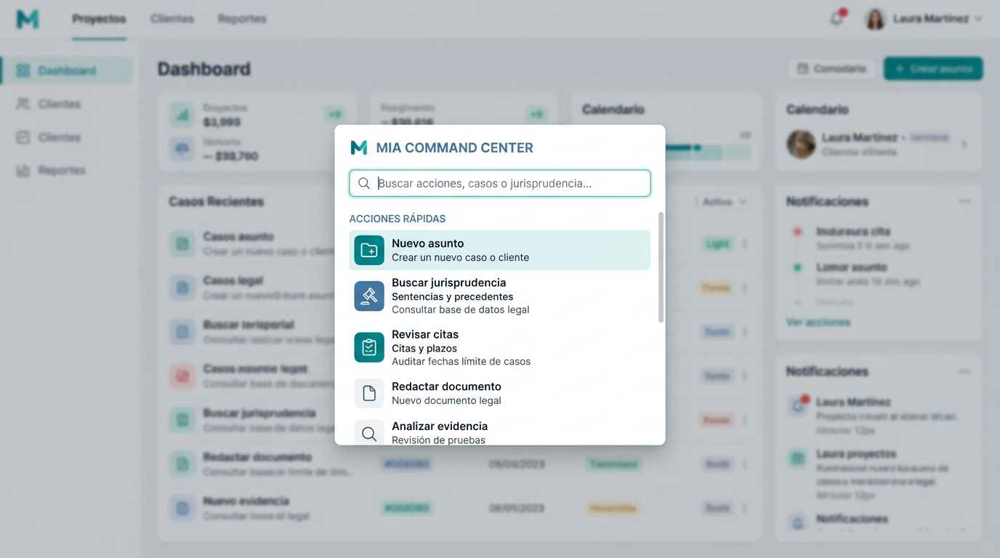
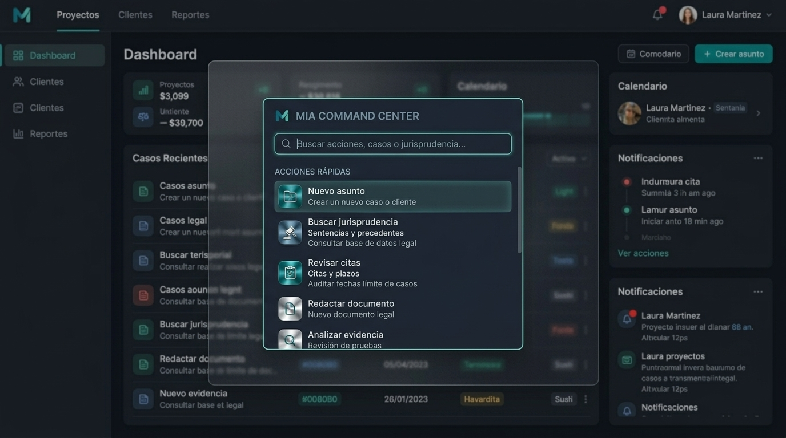
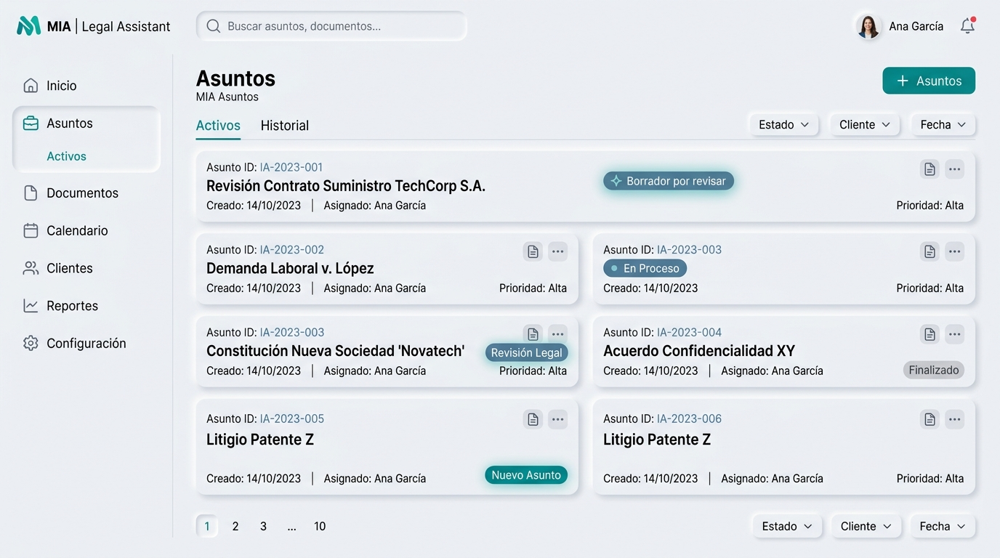
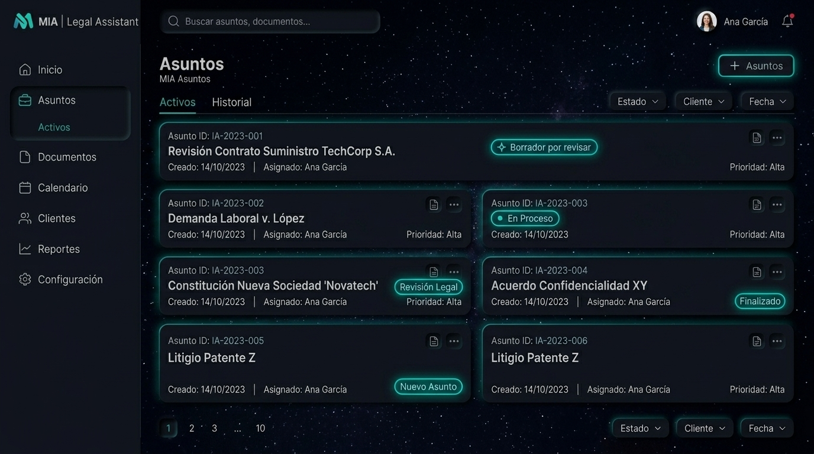
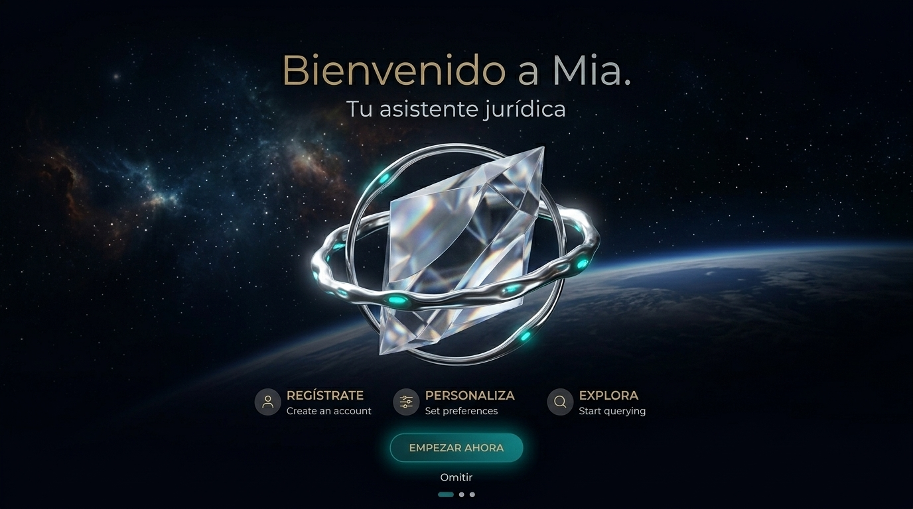

Cotejo visual — producto vs MIA-Luxury-Design-Pack · 2026-09-01
1 · Centro de mando — claro
Render command_center_light.jpg contra /dashboard en tema claro.
Packreferencia
Producto · /dashboard06_panel-light
2 · Centro de mando — oscuro
Render command_center_dark.jpg contra /dashboard en tema oscuro.
Packreferencia
Producto · /dashboard12_panel-dark
3 · Casos — claro
Render matters_light.jpg contra /casos con el despacho de prueba sembrado (4 casos, uno con borrador esperando revisión).
Packreferencia
Producto · /casos15_casos-light
4 · Casos — oscuro
Render matters_dark.jpg contra /casos en tema oscuro.
Packreferencia
Producto · /casos16_casos-dark
5 · Onboarding — claro
Render onboarding_light.jpg contra /onboarding con un despacho recién registrado y sin entrevista — la única forma de que la pantalla se muestre en vez de redirigir al escritorio.
Packreferencia
Producto · /onboarding17_onboarding-light
6 · Onboarding — oscuro
Render onboarding_dark.jpg contra /onboarding en tema oscuro.
Packreferencia
Producto · /onboarding18_onboarding-dark
Tres cosas que salieron al mirar
1 · El dorado sigue en la portada del onboarding. «Bienvenido» va en --accent-gold, no en teal. El código lo declara a propósito («el ÚNICO dorado permitido del producto, reservado a esta portada», WelcomeHero.tsx:57 y onboarding/page.tsx:509), pero el pack no lo usa y la decisión del 2026-08-19 fijó el pack como referencia. Es decisión de Pipe, no defecto: se queda o se va al teal.
2 · Las dos portadas dicen distinto. WelcomeHero pinta «Bienvenido a» en dorado; el onboarding solo «Bienvenido», dejando «a Mia.» en el color del texto. Misma frase, dos cortes.
3 · El avatar tapa «Cerrar sesión». En /casos, claro y oscuro, el círculo de cuenta abajo a la izquierda se solapa sobre la primera letra del enlace: se lee «errar sesión». Defecto de producto, reproducible en ambas capturas.
7 · Rótulo engañoso en la corrida anterior
Los archivos 04_…onboarding-perfil-light.png y 10_…-dark.png de la corrida del 2026-09-01 no son del onboarding: según veredicto.json corresponden a la ruta /memoria. Se muestran abajo con su ruta verdadera. El onboarding real es el de la sección 5.
Qué acredita esta página y qué no
Acredita que los tres pares del pack están completos, en claro y oscuro: centro de mando, Casos y onboarding, cada pantalla del producto enfrentada a su render. No acredita que se vean como el pack: ese veredicto es de quien mira, y las tres observaciones de la sección 6 son lo que vio quien montó esta página, no una sentencia. Las cuatro capturas nuevas (15 a 18) se toman con e2e/capturas_cotejo_pack.mjs, que falla si una pantalla redirige o se queda en el spinner.